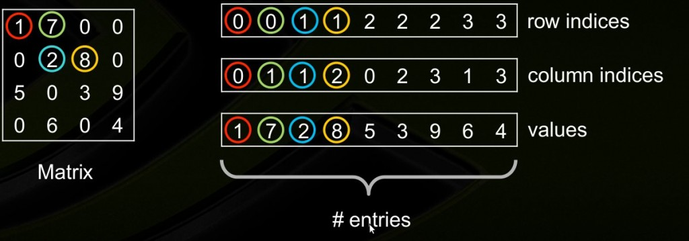

pytorch常用操作
好记性不如烂笔头系列之——pytorch常用操作
稀疏矩阵的存储
coo_matrix
COOrdinate format matrix
需要使用3个等长的数组。values数组存放矩阵中的非0元素，row indices存放非0元素的行坐标，column indices存放非0元素的列坐标。
- 优点：
- 容易构造
- 可以快速地转换成其他形式的稀疏矩阵
- 支持相同的(row,col)坐标上存放多个值
- 缺点：
- 构建完成后不允许再插入或删除元素
- 不能直接进行科学计算和切片操作
- 适用场景：
- 加载数据文件时使用coo_matrix快速构建稀疏矩阵，然后调用to_csr()、to_csc()、to_dense()把它转换成CSR或稠密矩阵

- 加载数据文件时使用coo_matrix快速构建稀疏矩阵，然后调用to_csr()、to_csc()、to_dense()把它转换成CSR或稠密矩阵
1 | row = np.array([0, 3, 1, 0]) |
csc_matrix
Compressed Sparse Column matrix
class scipy.sparse.csc_matrix(arg1, shape=None, dtype=None, copy=False)
需要三个向量来存储。
indptr长度为矩阵列数+1。用来指示矩阵每一列的非零元素的下标范围。
indices长度等于矩阵中非零元素个数。保存矩阵中每一列非零元素的所在行下标。
data长度等于矩阵中非零元素个数，用来保存所有非零元素。
1 | import scipy.sparse as sp |
csr_matrix
Compressed Sparse Row matrix
与csc_matrix类似，只不过行列颠倒过来。
pytorch中稀疏矩阵
pytorch中也支持COO（rdinate）格式的稀疏张量，可以有效地存储和处理大多数元素为零的张量。
1 | index = torch.LongTensor([[0, 1, 1], |
to_dense()函数可以转换为稠密表示
注意index是一个2D张量，每个维度分别表示非零值在每个维度下的坐标。第二个维度的向量的长度就等于非零元素的个数。
下面方法可以创建一个空的稀疏矩阵：
1 | torch.sparse.FloatTensor(2, 3) # 构造一个2x3的稀疏矩阵 |
scipy.sparse中的稀疏矩阵
稀疏矩阵构造方式
scipy.sparse中有五种构造稀疏矩阵的方式
用一个稠密的矩阵D构造 csr_matrix(D)
用另一个稀疏矩阵S构造 csr_matrix(S)
csr_matrix((M, N), [dtype])
构造一个空的MxN稀疏矩阵。csr_matrix((data, (row_ind, col_ind)), [shape=(M, N)])
构造一个MxN矩阵，row_ind为矩阵中非零值的行下标列表，col_ind为矩阵中非零值得列下标列表。即满足 a[row_ind[k], col_ind[k]] = data[k]csr_matrix((data, indices, indptr), [shape=(M, N)])
用标准的csc或csr表示构造稀疏矩阵。
用法示例
1 | import scipy.sparse as sp |
scipy.sparse中其他一些常用稀疏矩阵操作
sp.diags()
输入一个数组，构造一个以该数组中元素为对角元素的对角阵。1
2
3
4
5print(sp.diags([1,2,3]))
# 输出
# (0, 0) 1.0
# (1, 1) 2.0
# (2, 2) 3.0稀疏矩阵运算
表示成稀疏形式的矩阵可以直接进行矩阵加、减、乘法、转置运算。1
2
3
4
5
6
7
8
9
10
11m = np.array([[1, 2, 3], [5, 6, 7]])
m_csr = sp.csr_matrix(m)
# 矩阵加法
print(m_csr + m_csr)
# 矩阵减法
print(m_csr - m_csr)
#矩阵转置
m_csr_T = m_csr.transpose()
# 矩阵乘法
print(m_csr * m_csr_T)
print(m_csr.dot(m_csr_T))不同表示之间相互切换
1
2
3
4
5m = np.array([[1, 2, 3], [5, 6, 7]])
m_csr = sp.csr_matrix(m)
m_csc = m_csr.tocsc()
m_coo = m_csc.tocoo()
m = m_coo.todense() # 稀疏形式转换为稠密形式
Pytorch中的各种乘法
torch.dot(a, b)计算两个一维张量的点积，等价于a.dot(b)。（a和b只能是一维张量）torch.mm(A, B)计算矩阵乘法，不能广播torch.matmul(a, b)- a和b都是一维的，则计算点积
- a和b都是二维的，则计算矩阵乘法
- a是一维，b是二维，会将a当做1x2维计算矩阵乘法。矩阵相乘后，将删除前置尺寸。
- a是二维，b是一维，计算矩阵乘法。
- a或b维度大于2时将进行矩阵批乘法运算。非矩阵（即批量）维度可以被广播（因此必须是可广播的）。例如，如果input为（jx1xnxm）张量，而other为（k×m×p）张量，out将是（j×k×n×p）张量。
- * 计算element-wise乘积
permute,flatten,view
permute
对张量指定的维度进行转置。
1 | a = torch.rand((1,2,3,4)) # torch.Size([1, 2, 3, 4]) |
torch.flatten
torch中的flatten函数，与numpy中的略有不同。
展平一个连续范围的维度flatten(input, start_dim=0, end_dim=-1)
将input张量从维度start_dim到end_dim展开，展成一个维度。
1 | a = torch.rand((2,3,4)) |
view
返回一个有相同数据但大小不同的tensor，可以用来重构tensor的形状，可以理解为相当于numpy中的resize()功能。
另外一个tensor必须是连续的contiguous()才能被查看。
1 | x = torch.randn(4, 4) |
tensor.repeat()
沿着指定的维度复制tensor。
输入的维度个数不能小于tensor的维度。
举例：
1 | a = torch.FloatTensor([[1, 2, 3], [4, 5, 6]]) |
输出如下：
1 | tensor([[1., 2., 3.], |
squeeze与unsqueeze
用来对张量的维度进行压缩或解压。
squeeze
对张量的维度进行压缩，去掉维数为1的维度。
1 | # 例如a是一个维度为(3,1,3)的张量，下面两种方法等价，将a的维度变为(3,3)。 |
还可以指定压缩的维度，但要压缩的维度维数必须为1才可以进行压缩。
1 | # 例如a是一个维度为(1,2,1,3)的张量，下面两种方法等价，将倒数第二维度压缩，a的维度变为(1,2,3) |
unsqueeze
与squeeze作用相反，增加张量的维度。
1 | m = torch.rand((3,3)) |
torch.where
输入三个参数，第一个是判断条件，为真则返回地二个参数，为假则返回第三个参数。
torch.where的参数必须都是tensor类型。且条件与结果tensor中的元素位置一一对应。
1 | a = torch.FloatTensor([[1, 0, 0], [1, 0, 1]]) |
输出如下
1 | tensor([[ 1., -1., -1.], |
nonzero()
返回tensor中非零元素的索引。如下形式：
1 | t = torch.FloatTensor([[1, 2, 0], [5, 6, 7]]) |
pytorch模型的保存与加载
模型训练好之后，需要保存模型，以便以后用于推理。保存方法有以下两种：
保存模型参数
1 | # 保存, PATH为保存路径 |
这种方法只保存模型的参数，state_dict函数返回模型的参数字典，也就是将模型的参数字典序列化并保存到PATH中。
读取模型的时候，首先需要构建好框架相同的模型（在模型加载参数的时候，会根据字典中的key值来赋予相应的参数，因此需要保证key值的一致）
然后使用model.load_state_dict()来将保存的模型的参数赋给当前这个模型，从而恢复到之前保存的模型的状态。
保存整个模型
1 | # 保存 |
这种方法将整个模型序列化并保存到磁盘。因此加载的时候并不需要提前创建好框架相同的模型，而是直接加载回一整个模型对象。
一些区别
两种模型保存方式都可以达到保存模型的目的。好像区别不大，但是在一些特殊的情况下还是有区别的。
例如
我们预训练了一个模型A，然后想用模型A的参数来初始化模型B的参数（B模型包含A模型的全部或者部分模块），这时就需要使用保存参数的方法，先把模型A的参数读取进来，然后赋给模型B的相应参数。而如果使用的是保存整个模型A的方法，则无法用A的参数来初始化B。
因此总体上来说，保存参数的方法相对更加灵活。
另外还有一种情况是，模型训练尚未完成，需要暂时保存下来，日后再读取进来继续训练。这样的话就需要我们把当前的训练情况完整的保存下来。
完整的训练情况包括：
- 模型目前的参数
model.state_dict() - 当前epoch数
epoch - 优化器的当前状态
optimizer.state_dict() - 当前损失
loss - …
通常将这些需要保存的信息以字典的方式保存起来：1
2
3
4
5
6
7
8
9
10
11
12
13
14
15
16
17# 保存
# 已经训练了一部分的model 和 optimizer
torch.save({
'epoch': epoch,
'model_state_dict': model.state_dict(),
'optimizer_state_dict': optimizer.state_dict(),
'loss': loss,
...
}, PATH)
# 加载
# model 和 optimizer对象都需要提前创建好，且与保存的对象结构相同
checkpoint = torch.load(PATH)
model.load_state_dict(checkpoint['model_state_dict'])
optimizer.load_state_dict(checkpoint['optimizer_state_dict'])
epoch = checkpoint['epoch']
loss = checkpoint['loss']
跨平台保存与加载
可能我们在GPU上保存模型，读取模型到CPU；或者相反。
保存的时候方法都相同，即
1 | torch.save(model.state_dict(), PATH) |
但是读取的时候，同设备之间的保存与读取没有问题。
当读取不同设备保存的模型时，需要通过load_state_dict()的map_location参数指定将数据读取到哪个设备上。
1 | # GPU上保存的模型，读取到CPU上。 |